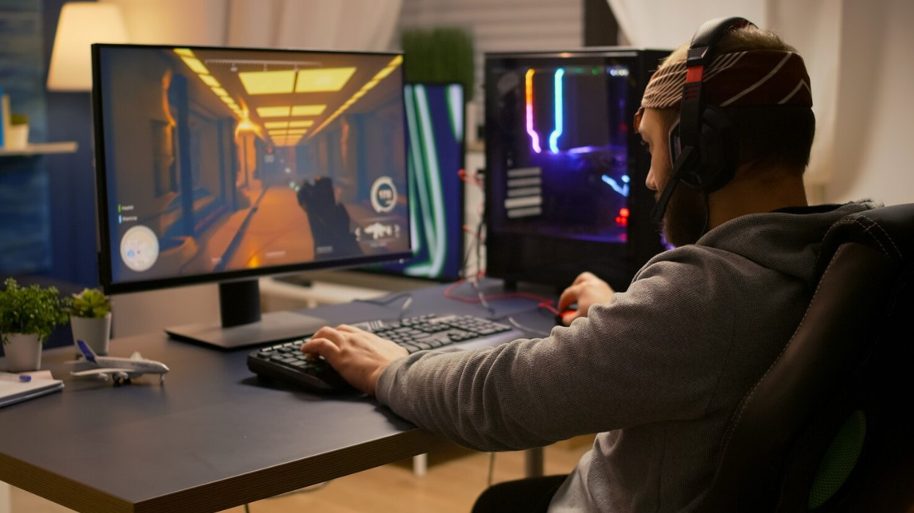

The first Personal Computer (PC) was created in 1971. Roughly
0d 0hr 0min 0sec
ago. Since this time Computers have benefitted many aspects of life and our world.
BENE-Computing is a website where you can explore the many benefits of computing across several different fields. Join us and learn about how computers have impacted our day-to-day lives through advancements in Communication, Research and Entertainment.

Communication
Discover how Computing has enchanced Communication and the benefits that has created!
Go

Research
Find out how Computing has made Scientific Research more efficient, accurate and collaboarative!
Go

Images:
- Image by liuzishan on Freepik
- Image by Freepik
- Image by Freepik